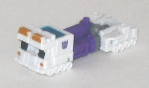
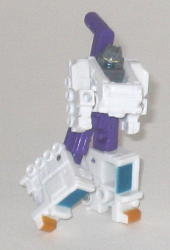
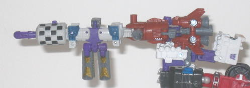
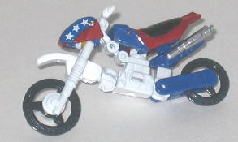
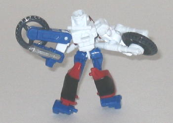
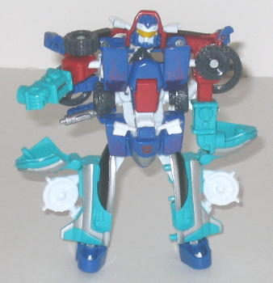

Blastcharge
vs. High Wire
Blastcharge
vs. High Wire
Size
: Mini-Con (2-pack)
Overall Rating
: 6.1
 Blastcharge
Blastcharge


Allegiance
: Decepticon, Minicon
Difficulty of Transformation
: Very
Easy
Color Scheme
: White, purple, moderately
dark gray, and some black, metallic dark aquamarine, metallic golden yellow,
and flat yellow
Individual Rating
: 5.3
(NOTE: Because this toy is a repaint, this
is not a full-blown review. This mainly covers any changes made to the
toy and the color scheme, and merely compares it to Armada Payload. For
a review on the mold itself, read the review of Armada Payload
here
.)
Cybertron Blastcharge
has a very cool, very Decepticon-y paint job mainly consisting of purple
and white, with a bit of gray thrown in for good measure. These colors
work extremely well together, and give this toy what I think is the best
of the three color schemes it's hard so far. And, with the exception of
the purple, it also looks fairly realistic, too. The metallic teal and
yellowish gold paint apps contrast really nicely with the white as well,
and overall give the toy a very finished, polished feel. The only thing
I'm not too crazy about is the black window paint apps-- I mean, BLACK
windows? How does THAT work?
No mold changes have
been made to Cybertron Blastcharge, though a Decepticon emblem has been
painted on the left side of his vehicle mode.
Blastcharge Bio
:
In between the moons of Cybertron trails
a 3,000 mile-long field of debris left there by the many battles that have
been fought in orbit around the machine planet. It is in the dangerous,
remote center of this desolate asteroid field that Blastcharge, under the
direction of Sunstorm, has constructed a decoy base of operations. The
leader of the Deep Space Mini-Con Team had hoped to luer in and destroy
fighters for the Mini-Con Council of Sages. He never imagined that the
Council would send the one and only Street Action Team to their Doom!
Strength: 7.0
Intelligence: 6.0
Speed: 5.0
Endurance: 10.0
Rank: 4.5
Courage: 6.0
Fireblast: 3.0
Skill: 7.5
Umbral
Blaster (Combination of Blastcharge, Backblast, and Scrap Iron)

Difficulty of Transformation
: Easy
Color Scheme
: Purple, white, grayish
white, moderately dark gray, muddy orangish brown, and some metallic dark
aquamarine, black, metallic golden yellow, dull metallic gold, dark navy
blue, and flat yellow
Individual Rating
: 6.3
The combined form of
these molds this time is called the Umbral Blaster-- a very good, fitting
name for a big gun o' doom, methinks. The color schemes of
Scrap
Iron
and Blastcharge, which are nearly identical, obviously fit very
well together-- too bad they're on opposite ends of the gun and connected
by the odd man out,
Backblast
. Backblast
still has the same gray and purple as his teammates, but the brownish orange
doesn't really fit in completely with the other colors, though at laest
it doesn't outright clash. Still, even taking that into account, the overall
color scheme for this gun seems better to me than either of its previous
two paint jobs, if you ask me, and looks pretty cool when a big ol' Decepticon
is holding it.
 High
Wire
High
Wire


Allegiance
: Autobot, Minicon
Difficulty of Transformation
: Easy
Color Scheme
: White, moderately
dark blue, red, and some black, silver, charcoal gray, and dull golden
yellow
Individual Rating
: 6.8
(NOTE: Because this toy is a repaint, this
is not a full-blown review. This mainly covers any changes made to the
toy and the color scheme, and merely compares it to Energon High Wire.
For a review on the mold itself, read the review of Energon High Wire
here
.)
High Wire's new paint
job is pretty cool in vehicle mode, namely because it makes him look so
much like daredevil Evil Knievel's bike that I'd be surprised if that's
not where the Hasbro team drew the inspiration from. The red, white, and
blue colors (all of which look very good together, by the way), the all-American
stars and stripes down the front part of this mode-- it all screams stunt
bike. Sadly, the excellent paint job in vehicle mode makes the colors in
robot mode look rather uneven-- High Wire has that nice red and blue, with
a good amount of paint, on his legs and right arm, but his main body, head,
and left arm are all white and completely devoid of paint apps. That uneven-ness
really should've been taken into account when planning out this color scheme.
No mold changes have
been made to Cybertron High Wire, but a black Autobot symbol has been added
to the front part of the bike mode, right above the molded-in Minicon symbol.
High Wire Bio
:
High Wire and his teammates on the Street
Action Team returned to Cybertron as heroes after the Energon Battles.
As a result, they were among the first warriors enlisted by Anti-Blaze
and the Mini-Con Council of Sages to fight the Mini-Con rebels. He is reluctant
to return once again to battle, but he also knows that - combined as Perceptor
- the Street Action Team is the most powerful warrior among the Mini-Cons,
and the only one with a chance of going up against the Deep Space Mini-Con
team and winning.
Strength: 8.5
Intelligence: 6.0
Speed: 6.5
Endurance: 7.5
Rank: 6.0
Courage: 10.0
Fireblast: 5.0
Skill: 8.0
Perceptor
(Combination of Grindor, High Wire, and Sureshock)

Difficulty of Transformation
: Medium
Color Scheme
: Sea foam bluish green,
white, moderately dark blue, and some silver, charcoal gray, black, dull
metallic jungle green, red, metallic goldish silver, metallic deep purple,
and moderately dark metallic blue
Individual Rating
: 5.6
Perceptor's new paint
job is better than his previous one-- from the chest up, at least. The
red used in High Wire and
Sureshock
goes very well with the dark blue, and the white throughout the figure
serves as a good contrasting color. The purple flames on the main body
and the starts on the sides of the head also give the mode a little extra
flair. The robot head, in addition to having good mold detailing, also
has excellennt paint detailing this time around-- the white really helps
to bring out the detail, and it's cool to see the golden color for the
optics only used there and nowhere else, to make a more varied color scheme.
However, the lower arms and legs are still that incredibly yucky, clashy
color of sea green. That's what really throws off the whole scheme, and
what, sadly, brings this version of Perceptor as a whole down to a lower
score than his Energon paint job.
Blastcharge vs. High
Wire is a set of two fairly good Minicon molds with great paint jobs for
both that surpass any of their molds' previous incarnations. As such, it's
easily my most-recommended Wave 4 Minicon Battle Pack, though obvious both
of their combination abilities are useless if you don't get the other two
packs in the wave.
Review by Beastbot
Back to Transformers:
Cybertron Index